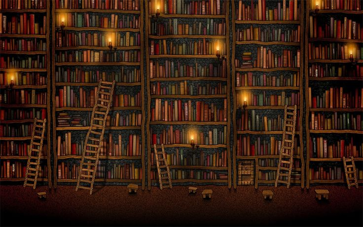

Um dia desses, dentro da biblioteca da escola eu descobri uma carta antiga sobre uma cidade perdida, escondida por riquezas e belezas naturais. Nessa acrta, a autora deixa algumas pistas para encontrar essa cidade e eu decidi segui-las!
Você já começa a sua jornada, Subindo o Pico da Tijuca ao amanhecer para encontrar a primeira pista.